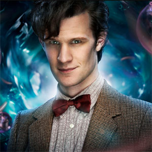

r]
r]
| The First Doctor |
| The Second Doctor |
| The Fourth Doctor |
| The Fifth Doctor |
| The Sixth Doctor |
| The Seventh Doctor |
| The Eighth Doctor |
| The Ninth Doctor |
| The Tenth Doctor |
| The Eleventh Doctor |
| The Twelfth Doctor |
Eleventh Doctor
Portrayed by Matt Smith.
The Eleventh Doctor is the eleventh incarnation of the protagonist of the BBC television science fiction series Doctor Who. He is played by Matt Smith, who appears in three series as well as seven specials, over a four-year period. As with previous incarnations of the Doctor, the character has also appears in other Doctor Who multimedia.
Within the series' narrative, the Doctor is a centuries-old alien, a Time Lord from the planet Gallifrey, who travels in time and space in his TARDIS, frequently with companions. When the Doctor is critically injured, he can regenerate his body but in doing so gains a new physical appearance and with it, a distinct new personality. Smith portrays the eleventh such incarnation, a quick-tempered but compassionate man whose youthful appearance is at odds with his more discerning and world-weary temperament.
His main companions included feisty Scot Amy Pond, her husband Rory Williams and the mysterious Clara Oswald. He also frequently appeared alongside River Song, a fellow time traveller with whom he shared a romantic storyline, and was the last Doctor to appear alongside the long-serving companion Sarah Jane Smith prior to the actress' death, featuring in two episodes of the spin-off programme The Sarah Jane Adventures.